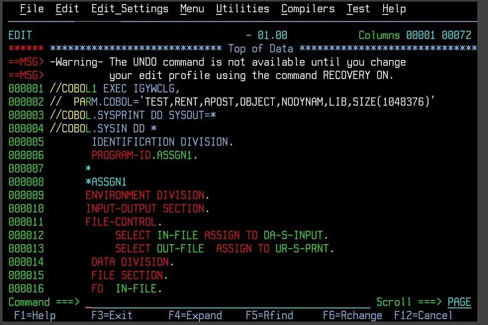

Criações
Enquanto atuava na marinha desenvolveu a liguagem de programação Flow-Matic, primeria linguagem de programação assemlhada ao inglês (alto nível), tal que serviu como base para a criação da linguagem COBOL (Linguagem comum orientada para os negócios).
COBOL

Flow-Matic
O termo "bug" utilizado para designar defeitos, falhas ou erros em um programa, foi criado por ela. A situação foi que ocorreu um problema no sistema de um computador causado por uma mariposa, então ela falou bug (inseto, em inglês).

Criou o primeiro compilador, programa que criava outros por meio de um código-fonte escrito em uma linguagem, ou seja, traduzia um programa em alto nível para um de baixo nível.